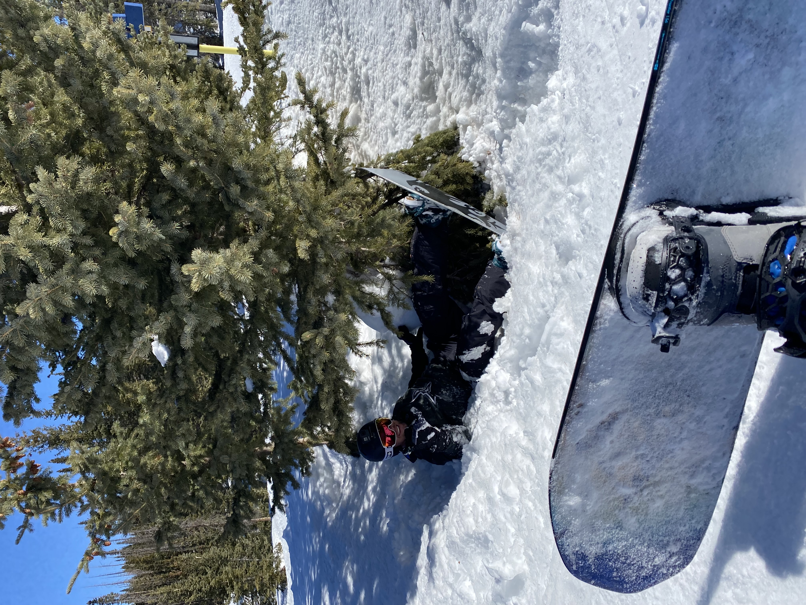

About Me
I am a 31 year old Veteran and former Firefighter/Paramedic. I recently left my firefighting career to start pursuing a career in the very fast growing tech field. I have always been interested in computers and how they work. I am very excited for this new adventure and look forward to beginning a new career.
Hobbies
My main hobbies include snowboarding, working out, watching sports, and hanging out with friends!
My favorite place to snowboard is called Wolf Creek in Pagosa Springs, Colorado!
I have been around 6 times and I like to believe I have gotten pretty good.

Working out is an important hobby for me, because it helps me to remain healthy and be able to live the life I choose! I love to have fun by playing sports, snowboarding, going on hikes, and travelling.